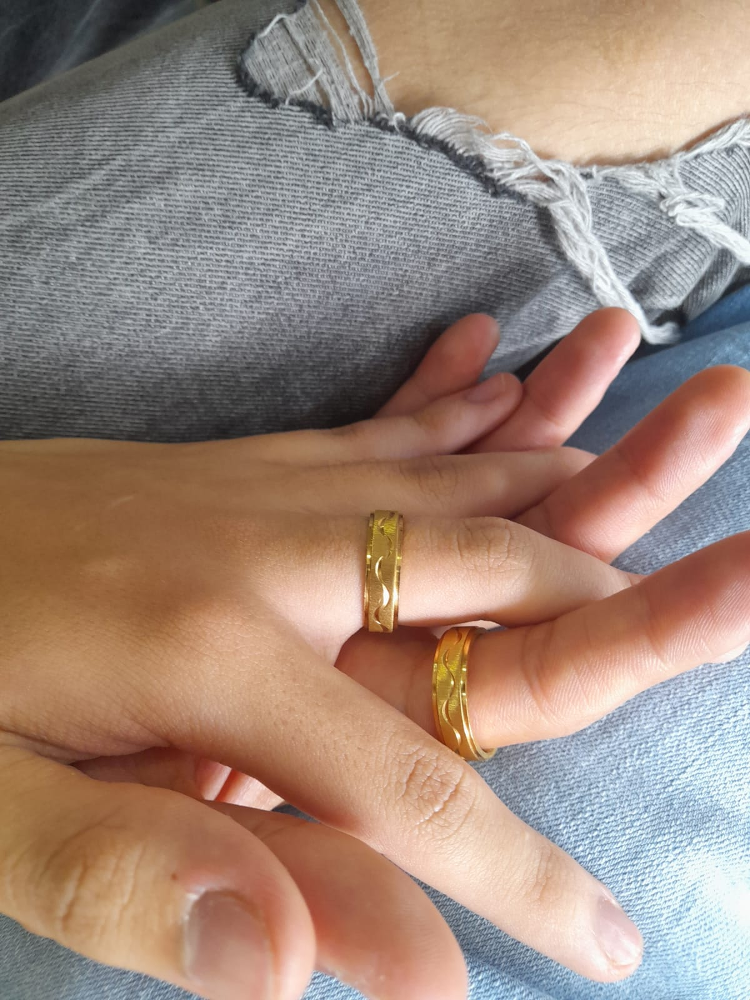
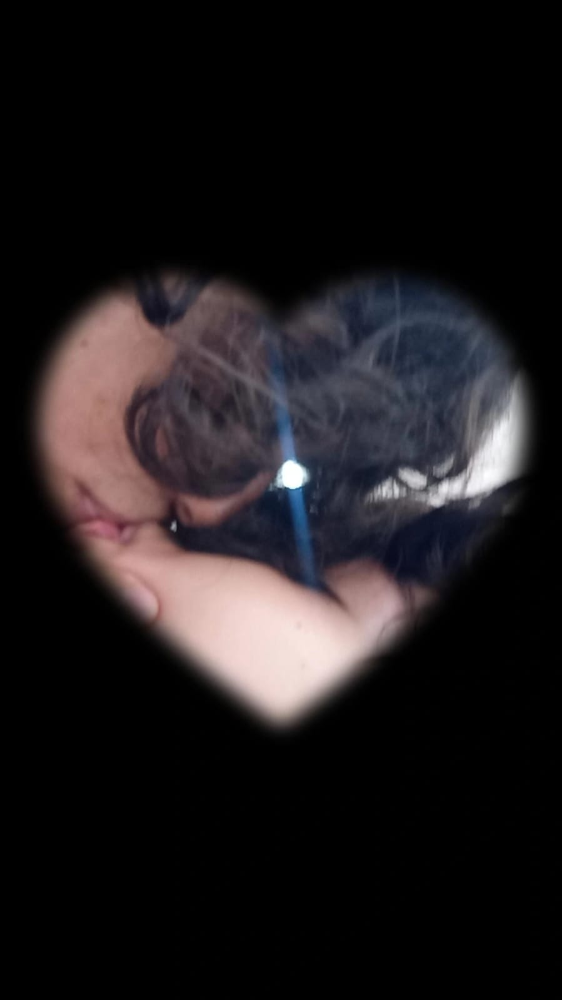
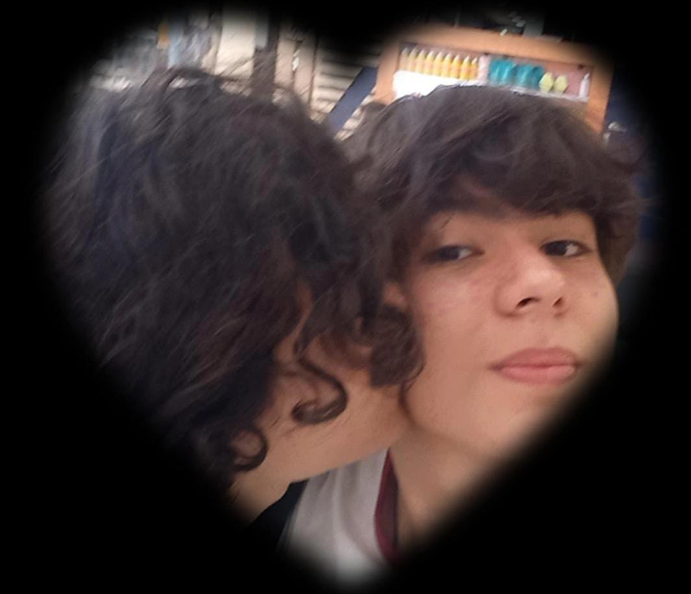
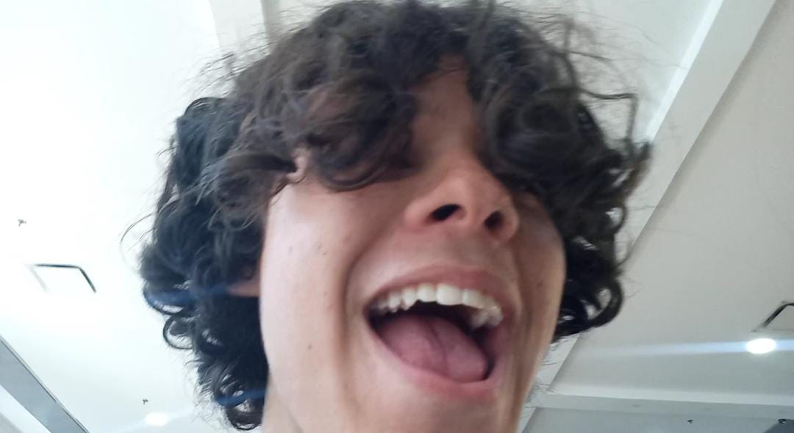
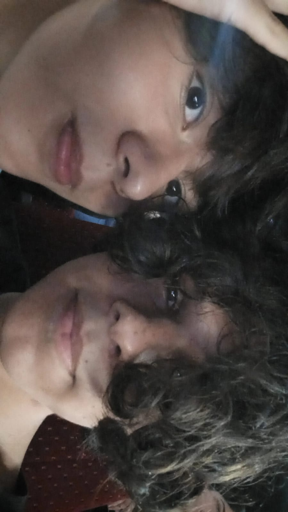
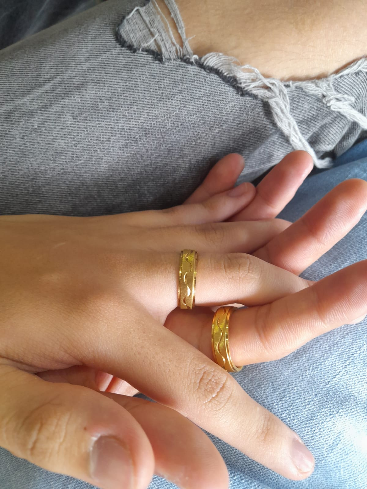

Acerca de mi angelito lindo
Un breve relato de lo que se de mi lindo novio. Angelito me ha hecho muy feliz desde el dia que lo conoci, la primera vez que salimos me parecio muy tiernoo y bonito.
A mi angelito le gusta mucho one piece y naturo muy otaku de su parte, no se muy bien si son los unicos animes que le gustan.
Cumple años el 22 de marzo falta muy poco para su cumple.
Tiene los ojitos de color oscuro, una piel blanquita y muy sueve, la piel de la carita es toda linda a el no le gusta sus cachetes pero yo los amo pq se ve todo tierno y todo bonito.
Tiene un pelo todo liso sueve y sedoso y lo hace ver mas lindo de lo que ya es.
Angelito es un niño muy inteligente con muchas aspiraciones a futuro algo que me gusta mucho y espero que logre todo lo que se proponga mi niño lindo.
Espero que se ponga a estudiar bastante para competir contra mi jijiji.
Espero que mi niño sea el Matematico Fisico Quimico que tanto quieres ser.
¿Por que amo tanto a mi niño?
Esto es algo muy obvioo osea solo hay que mirarle la cara, esa carita tan preciosa que tiene, esos ojitos es que dios mio.
Angelito ha sido una personita muy linda conmigo siempre me quiere ver feliz y me hace feliz, me encanta la forma que me mira
siempre me demuestra su amor hacia mi y por eso lo adoro tanto es muy amoroso lindo tierno caprichosito pq no le doy besitos
mi niño sabe cocinar muy rico, es todo bonito porque cuando voy a casa hace aseo y todo jssjjs. Me gusta verlo feliz tiene una sonrisita toda linda.
Casi todos los dias hacemos viodellamada y es muy bonito para casi no me gusta prender camara pero cuando lo hago es como si el cambiara de estado de animo
y se pone a hablar y hablar y a decir bobadas jsjaj es que mi niño es muy lindo, siempre es preocupandose por mi y es muy pendiente de mi, enserio muchas gracias
por estar conmigo corazon. Me parecio muy bonito que te hayas puesto hacer esas flores todas lindas para pedirme que fueramos novios fue algo muy especial para mi
enserio lo agradezco mucho mi amorcito, espero que nuestra relacion dure y sea muy bonita.
Las citas con el niño mas lindo
-
Esta fue nuestra primera cita. Salimos al centro comercial acababa de salir de la uni para verme con el niño mas lindos, comimos granizado
estaba que me lo comia a besos pero dije me voy a controlar y nos dimos abrazitos fue muy lindo. -
Esta fue nuestra segundo cita. Me parecio muy bonita la salida y mi niño es super consentido y cariñoso, nos fuimos a ver avatar 2 duramos
bastante tiempo junticos y me parecio muy tienro pq se puso a llorar pq me tenia me senti muy especial. Te amo amorcito y nos besamos :3
Aun guardo los tickets de ese dia :3. -
La primera vez que fui a su casita. Estuvimos junticos toda la mañana mimandonos dandonos besitos y cariñitos lo quiero mucho.
-
Nuestra tercera cita. Salimos a besarnos, comernos un granizado y a comprame un jean :3
-
Nuestras cuarta cita. Fuimos al centro comercial el amor de mi vida me dio un anillo todo lindoo que demuestra nuestro amor.
Comimos pollito y nos fuimos a ver una peli fue muy bonitoo. Nos besamos en el cine y nos vimos Quantum mania muy bueno jsjs.-

Los anillos.
-

Los Besitos.
-

Su carita preciosa.
-

Yo feliz pq tengo a mi novio
-

En cine
-

la carita linda de mi novio (en cine)
19/02/2023
-

-
El dia mas especial, la segunda vezz que fui a su casita, si con la misma camisa. Me dio unas flores que me tenia preparando hace tiempo
lo AMOO, nos tomamos foticos para celebrar nuestro noviazgo y amor lindo.